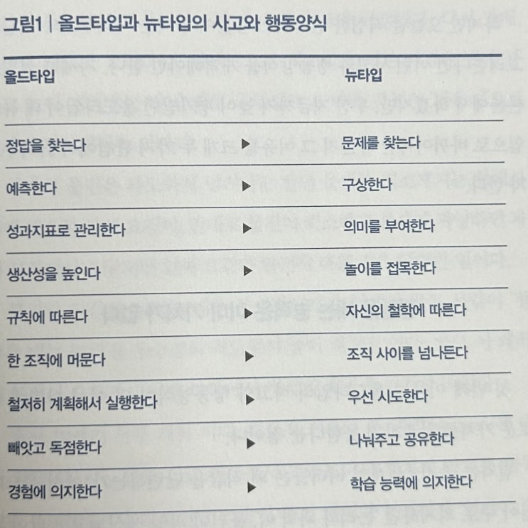

이번주는 책 볼 시간이 많았습니다. 덕 분에 두 권이나 봤네요. 지금은 세 번째 책을 읽고 있는 중입니다 (루이스 다트넬의
'인간이 되다'를 보고 있습니다).
물론 제가 잘나서 빨리 읽은 건 아니고...
두 권 모두 벽돌책같은게 아닌 쉽게 씌여진 책이라 두 권을 볼 수 있었습니다. (두 권중 다른 한 권은 '시공간 압축').
이번 책은 일본의 일종의 자기 개발서 같은 것인데 야마구치 슈 라는 분이 쓴 책으로 최근 빠르게 변화하는 세상에서 어떻
게 우리가 적응해서 살아갈 것인가를 다룹니다. 이러한 새로운 세상에 적응하는 인재를 '뉴타입', 적응하지 못하는 과거의
엘리트 형태를 '올드 타입'이라고 부르는데 다분히 일본 스러운 작명 센스입니다 ㅋㅋㅋ
내가 바로 우주세기의 '뉴타입' 아무로다!
아무로 야메로!
그렇다면 세상이 어떻게 변하고 있길래 뉴타입이 필요하다는 걸까요. 작가가 제시하는 변화하는 이 세상이 최근 변해가는
방식은 (메가 트렌드) 아래와 같습니다.
1. 물질은 풍요롭지만, 삶의 방향성을 잃어가다
2. 정답을 찾는 일보다 문제를 발견하는 일이 중요해졌다
3. 수요를 넘어서는 쓸모없는 일자리와 노동의 대두
4. 사회 전반에 변동성, 불확실성, 복잡성, 모호성 (VUCA)이 넘친다
5. '규모의 경제'가 더 이상 통하지 않는다
6. 인생은 길어지고, 기업의 수명은 짧아졌다
이러한 변해가는 세상에 적응한 것이 바로 건담의 아무로 레이...가 아니고 '뉴타입'이고 뉴타입은 기존의 엘리트인 '올드
타입'에 비해 다음의 차이점을 가진다고 하네요.

그리고 이 차이점에 대해서 여러가지 사례를 가지고 기술하는게 이 책의 구성입니다. 저자가 젊은 시절 컨설팅을 다녔던
데, 책의 내용을 보면 전형적인 컨설팅 나온 사람이 쓴 '사례 나열식' 구조를 가지고 있습니다. 이게 컨설팅에서는 맞는 것
이긴 한데 (고객님이 뭐든 선택해 주면 되는 것이므로) 솔직히 책을 읽는 독자 입장에서는 이런 책은 수준이 떨어진다고 느
껴집니다.
뭐 어쩔 수 없는거죠. 다 읽은 제 탓입니다.
그래도 아주 간간히 통찰력이 있는 문장들이 보입니다. 비록 책 자체는 조금 산만해도 파편적인 통찰력이 간혹 보여서 이
부분은 좋았습니다.
아래는 제가 좋았다고 생각한 구절들과 덧붙이는 제 생각들의 모음 입니다.
한편, 과거의 혁신 사례를 돌아보면,
경제적 가치는 '결과로서 획득 된 것'일 뿐, 그 크기가 얼마나 될지 처음부
터 확정적으로 예측된 적은 거의 없었다.
예를 들어,
소니의 휴대용 음악 플레이어 워크맨이 개발 되었을 당시
영업본부장이 판매 수량을 예측할 수 없다는 이유로 제품 화에 강력히 반대
했다는 일화는 유명하다.
p49
→ 실제로 신 제품에 대해 예측만 하고 간만 보다가 시기를 다 놓치는 기업들이 적지 않다. 애플이 이런 면에서는 정말 뛰
어나지.
지금까지 아시아의 주요 기업들은 경영의 3대 논점 가운데 'WHAT'도'WHY'도 아닌, HOW에 철저히 매달림
으로써 경쟁력을 키워왔다.
이런 방법으로 어떻게 이만큼 발전할 수 있었을까? 이미 미국과 유럽의 기업들이 '목표'로 해야 할 모습
WHAT'을 똑똑히 보여준 데다 '목표' 로 해야 하는 이유WHY도 그런 목표를 달성해야만 행복해진다고 생각 했
기 때문이다. 이런 상황에서 리더가 'HOW'와 관련된 지시를 내렸 을 경우 "WHAT은 무엇입니까?","WHY가
뭐죠?"라고 묻는 사람들은 오히려 경쟁력을 저하시키는 원인이 되었을 것이다.
그런데 1990년대 전반 상황이 크게 달라졌다. 이미 지적했듯이, 아시아의 기업들이 미국이나 유럽의 선진 기업
을 따라잡으면서 본보기 로 삼을 'WHAT(목표로 해야 할 모습)'을 상실한 동시에, 경제적으로 윤택해 졌는데도
행복을 실감하지 못하게 되어 'WHY(일하는 이유)가 설득력을 잃었던 것이다.
p115
→ 사라져버린 일본 기업들과 삼성을 보면 단순히 '효율적'으로 따라가는게 얼마나 위험한지 알 수 있다. 패스트 팔로워가
1등이 되면, 길을 잃고 헤매는게 국룰이다.
노력하면 반드시 보상받는다는 명제는 오해이며, 실제로는 개인의 적성이 나 환경 그리고 노력에 따라 얻을 수
있는 이익에 큰 차이가 있다.
무작정 노력한다고 해서 보상받는 것은 아니다. 중요한 것은 노력의 방향 과 자신의 적성이 맞아야 한다는 점과,
그 노력이 기량의 향상으로 이어지 는 올바른 방식의 노력이어야 한다는 점이다. 이 두 가지가 충족되지 않으 면
노력은 헛수고로 끝날 가능성이 크다.
우리가 자주 듣는 1만 시간의 법칙', 즉 어떤 영역에서든 1만 시간 동안 훈련하면 세계적인 수준이 될 수 있다는
주장이 틀린 것은 아니지만, 어떤 분야에서나 성립하는 보편적인 정론인 것은 아니다
. 훈련의 양과 기량의 향상
간의 연관성은 분야에 따라 다르다는 것이 연구 결과 밝혀졌다.
p184
→ 노오력 만물 창조설에 대한 비판. 이제 우리나라도 말콤 글레드웰이 전파한 노오력의 1만 시간 법칙이라는 망령에서 나
와야 할 때가 되었다.
우리가 일상적으로 사용하는 '언어'는 매우 엉성한 의사소통 도구다. 따라서 우리는 원칙적으로 자신이 이해하
고 있는 내용을 100퍼센트 언어로 전달할 수 없다. 즉 언어로 이루어지는 의사소통에서는 항상 '중요한 뭔가'가
누락될 가능성이 있다.
20세기에 활동한 헝가리 출신의 물리학자이자 사회학자인 마이클 폴라니는 '우리는 자신이 말할 수 있는 것보
다 훨씬 많은 것을 알고 있다'고 했다. 오늘날에는 이렇게 말할 수 있는 것 이상의 지식을 '암묵 지 tacit
knowledge'라고 부른다.
암묵지는 언어를 통한 의사소통에는 항상 '누락'이 발생한다는 점을 상기시키는 개념
이다.
p261
→ 언어의 맹점에 대해서 늘 고민해야 한다. 이거 참 어려운 숙제다.
이제 가치관이 점점 다양해지는 가운데, 대부분의 사람은 평생 여러 개의 조직이나 공동체와 관계를 맺으며 살
아갈 수밖에 없게 되었 다. 이런 시대에 자
신과 가치관이 같은, 서로 이해하는 사람'들끼리만 의사소통을 반복하
면서 그 바깥에 있는 사람들은 서로를 이해하지 못하는 사이라고 차단해버린다면 인생에서 얻을 값진 배움의 계
기를 빼앗길 수밖에 없다.
우리는 급하게 '안다'고 나서지도 말고 배타적으로 '알지 못한다'고 차단해서도 안된다. 이제 다른 사람의 목소
리에 귀를 기울이고 공감 할 줄 아는 뉴타입의 행동양식이 요구되는 시대가 되었다.
p266
→ 에코 챔버에 대한 비판이다. 앞으로 더 심해질 문제이다.
마지막으로 이 책에서 가장 좋았던 구절을 소개해본다.
이 구절 만큼은 상당히 좋아서 나도 모르게 머리가 핑 하고 도는 느낌이었다.
현재의 풍경은
누군가가 내린 결정의 집적이다
p58, 미래를 예측하는 것이 아닌 구상하는 능력에 대해 설명하며
책 자체는 좀 허술하였지만, 그래도 간간히 통찰력이 보이는 책이었습니다.
끝.